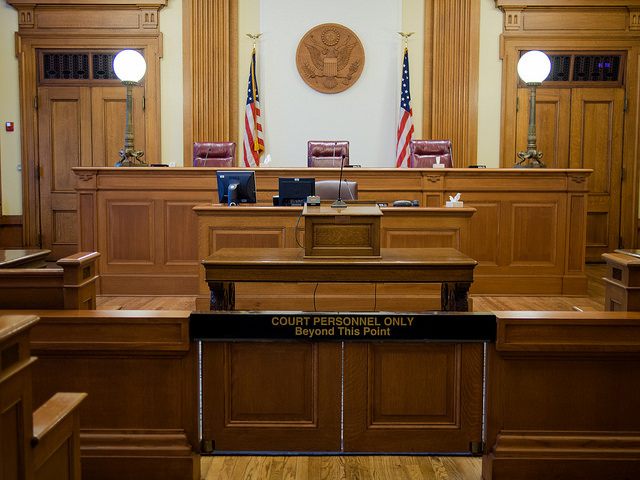

In the movie "The house i live in" by historian and Lincoln biographer, Richard lawrence miller.In his movie he talks about the anti-drug laws and how they affect the people when it comes to the U.S court system.
By Kneoh licensed under CC by 2.0
ln 19O7, California was the flrst state to pass a law that prohibited the use of opium. Mitler mentions that before that law waspassed, most of the people who were known for using opium were white and middle class. The onlyreason why opium became iilegal was because it was found that Chinese immigrants were smoking it. Black Americans have been and are still being treated as the number one source for drug crimes.Miller said, "These laws set up a very dangerous precedent of racial control." Prisons hold up to 38% of black Americans while only being a little more of 13% of the U.S. population. At one point in time, around the late 1980s, crack cocaine was more punishable than powdered cocaine despite crack being mostly the same just cheaper.For the past 40 years, the war on drugs has resulted in more than 45 million arrests, $1 trillion dollars in government spending, and America’s role as the world’s largest jailer. Yet for all that, drugs are cheaper, purer, and more available than ever.
on the site newyorklegaldefense.com it say "An arrest for possession of 8 ounces or more of cocaine or a cocaine mixture is classified as criminal possession in the 1st degree, a Class A-I felony punishable by 8 to 20 years in prison. Second time offenders may face up to 24 years in jail, and previous violent offenders face 15 to 30 years." but for crack "A first conviction for possession of any amount of Crack/cocaine is punishable by up to 1 year in jail, as well as a minimum fine of $1,000.A second conviction for possession of any amount of Crack/cocaine is punishable by up to a minimum time in jail of 15 days and a maximum period of 2 years, as well as a minimum fine of $2,500." the is not adding up here? when there pretty much the same just one is power and the other isn't.